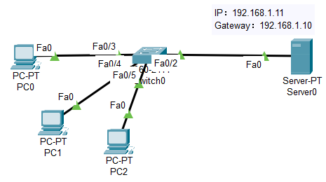
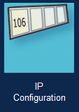
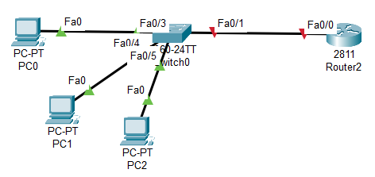

动态主机配置协议
DHCP
- 方案1：使用专门的服务器
- Server-PT：
端设备；同主机 PC
本质上就是一台Windows/Linux服务器的角色，和家里的电脑是同类设备，只不过"预装"了各种服务软件
可以装各种服务，如HTTP、DHCP、DNS、Email、FTP、IoT等
不具备路由功能；不能做IP包转发；不能做网关
- 特点：简单
- 搭建拓扑
服务器：Server-PT
交换机：2960
PC：若干台
- 服务器 IP 配置
IP 地址
子网掩码 Subnet Mask
"桌面 Desktop" → "IP 配置"，可以配置更多参数，如默认网关 Default Gateway
- 服务器开启 DHCP：服务 Service → DHCP
- 各 PC 启用 DHCP
因为是动态分配 IP，不再使用"配置 Config"
而是使用："桌面 Desktop" → "IP 配置" → 启用 DHCP
稍后即可看到分配的 IP
也可以开启后，使用终端命令 ipconfig 查看
- 利用 ping 命令，测试各设备的连通性
- 方案2：使用路由器 点击下载PT文件
- 相关命令
- 搭建拓扑
路由器：2811
交换机：2960
PC：若干台
- 路由器完整配置命令
- 检查接口状态；看到 up/up 说明物理连接正常
- 检查 DHCP 地址池
- 检查 DHCP 地址绑定/已分配
- 各主机启用 DHCP（略）
- 查看各主机 IP 地址；应该是51 52 53； DHCP 地址池按顺序分配
- 测试设备的连通性
- 扩展练习 Extending
- 增加一台PC；将操作模式调整为模拟通信；更改PC的地址分配方式为DHCP，单步调试查看 DHCP 数据报的发送过程




Router#show ip dhcp pool
Router#show ip dhcp binding

enable configure terminal ip dhcp excluded-address 192.168.1.1 192.168.1.50 # 从 .1 到 .50 共 50个IP地址；统计时 只算作 1 个排除项（范围） ip dhcp pool LAN_POOL network 192.168.1.0 255.255.255.0 default-router 192.168.1.1 dns-server 8.8.8.8 exit interface fa0/0 ip address 192.168.1.1 255.255.255.0 no shutdown exit write memory
Router#show ip interface brief